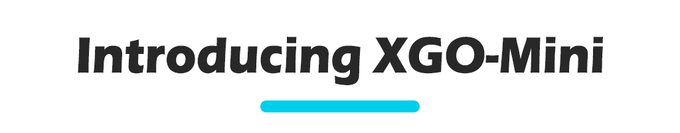
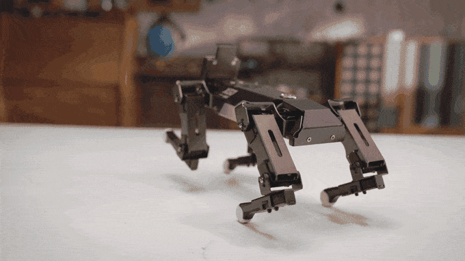
XGO-Mini K210是一款具有十二自由度桌面级Al机器狗 ，可实现全向移动、六维姿态控制、姿态稳定、多种运动步态。
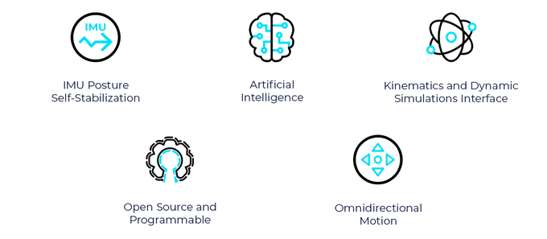
内部搭载9轴IMU、关节位置传感器和电流传感器反馈自身姿态和关节转角与力矩，用于内部算法和二次开发。支持电脑对机器狗进行图形化和python编程，开发AI应用。为教育、研究、算法验证和娱乐而设计的。

XGO Mini拥有功能齐全的人工智能模块，可方便入门级和高级人工智能应用。Al模块具有视觉识别、语音识别和手势识别功能，使XGO Mini能够像真狗一样听到、识别和回复用户。它还可以跟踪多种颜色，识别二维码、AprilTag和数据矩阵等。通过不同的编程，它可以实现超出您想象的更多功能。
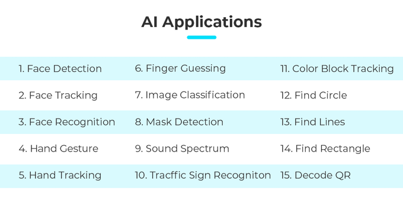
口罩识别
手势识别
物体识别
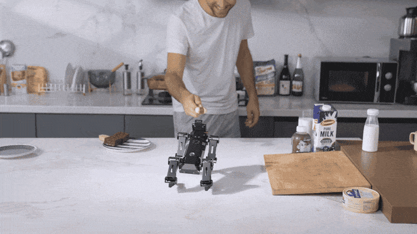
AI芯片
XGO Mini的AI模块具有内置Kendryte K210芯片，具有RISC-V处理器体系结构、视听、独立IP核和强大的可编程性。支持存储在Micro SD卡中的图像、音频、视频、机器学习模型和其他类型的材料。
XGO团队与迦南Canaan合作，通过使用其最强大的边缘计算芯片Kendryte K210，设计了视觉和语义识别，广泛应用于各种场景。迦南是超级计算解决方案的领先供应商，以卓越的成本效率和性能而闻名。
12自由度
XGO Mini的12个活动关节基于反向运动学，使其能够向前、向后、向左和向右移动，并支持全方位运动和多个方向的运动叠加。
更多信息
XGO Mini是一种四足机器人，可以模仿狗走路的动作，并具有在不平的地形和极其粗糙的表面上行走的某些优势。甚至可以通过调整高度来适应躲避障碍物。凭借其独特的仿生系统，XGO Mini可以执行任何动态运动。
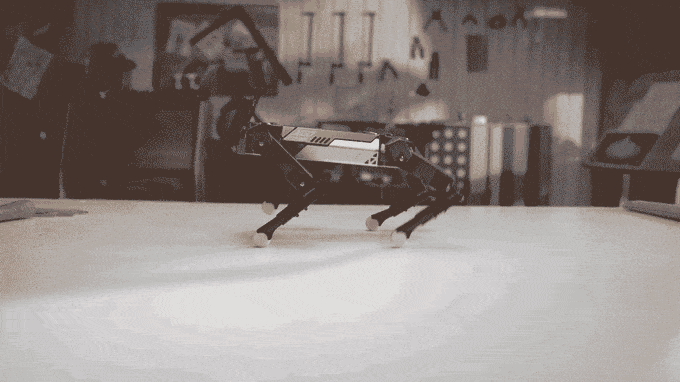
XGO的关节由直流电机、减速齿轮、传感器和控制电路组成，带有伺服控制PID算法系统。颠覆无闭环功能的传统转向器，360°角度可控，角度识别精度0.088度，内置加速、启动和停止功能，机械化动作流畅逼真（陆吾智能设计，Feetech制造）
自稳定
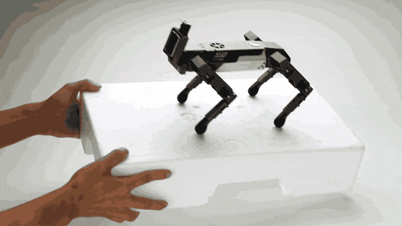
内置IMU捕捉XGO Mini运动数据，产生高度灵活稳定的运动性能。通过IMU获得的姿势数据，闭环控制允许XGO Mini适应外力，调整手动动作的目标姿势，并启用示教功能。

当它的脚不移动时，可以实现身体六个自由度的运动控制。它具有前所未有的机动性，协调所有本能和复杂的运动。
一键设计
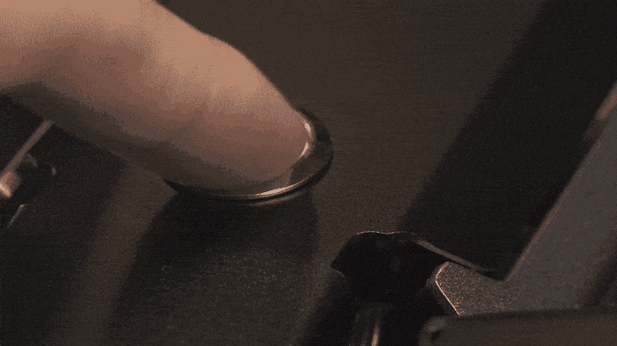
XGO Mini是一款组装套件，因此可以随时使用。凭借其一键式设计和专属应用程序，你可以轻松地与XGO Mini即时互动。有了Edge计算芯片，人工智能可以在本地系统上运行，并且可以在没有互联网和移动设备的情况下进行控制。
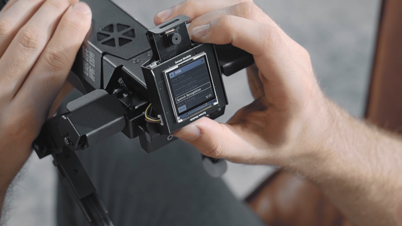
App控制
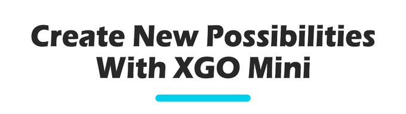
开源与DIY
XGO Mini允许用户使用Python编程，我们还为开发人员提供在Ubuntu或Raspberry上运行的ROS包。每个人都可以为XGO Mini创建自己的功能，用于教育、娱乐和商业用途。无限的编程可能性帮助你探索、学习和享受乐趣。如果XGO Mini还不够，我们将为您提供高级版本XGO Ultra。
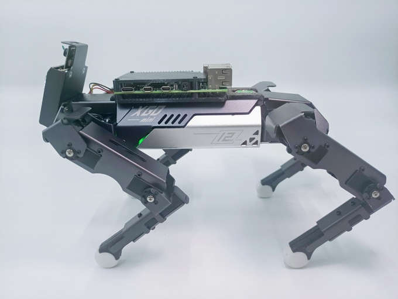
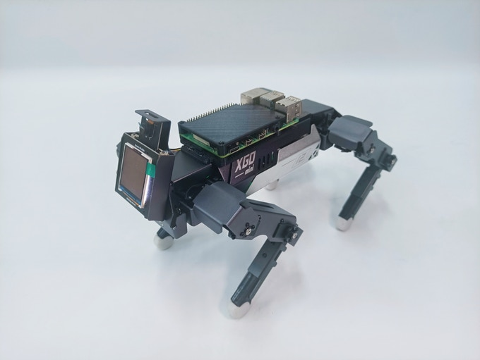
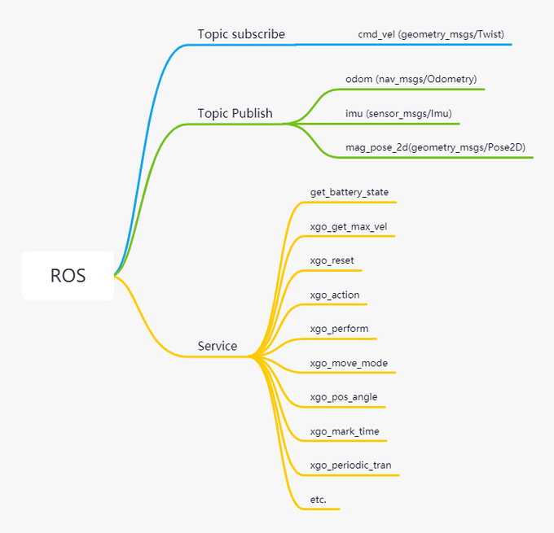
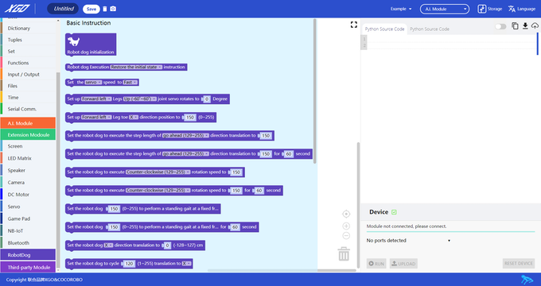